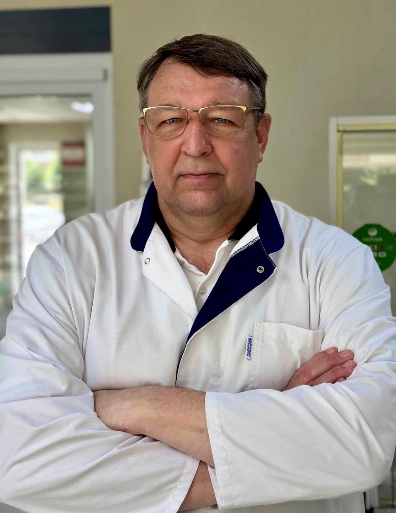

История и опыт
Ветеринарная клиника LAVET.su в Воронеже основана 13 октября 1997 года. За годы работы клиника разработала и внедрила собственные подходы к лечению и профилактике заболеваний непродуктивных животных.
•Воронеж, улица 20-летия Октября, 105/1 - Ежедневно 9:00-21:00•

Ветеринарная клиника LAVET.su — место, где забота о животных, опыт врачей и внимательное отношение к владельцам работают вместе.
Работаем с 1997 года и помогаем владельцам заботиться о здоровье питомцев.
Ветеринарная клиника LAVET.su в Воронеже основана 13 октября 1997 года. За годы работы клиника разработала и внедрила собственные подходы к лечению и профилактике заболеваний непродуктивных животных.
Специалисты клиники проводят профилактические мероприятия для собак и кошек: вакцинацию, обработку от паразитов и плановые осмотры.
В работе используются практические методики лечения заболеваний домашних животных, включая опыт борьбы с кожными и паразитарными патологиями.
Мы стремимся объяснять владельцам состояние питомца понятным языком и подбирать решение с учетом возраста, здоровья и особенностей животного.

Главный врач клиники
Руководитель LAVET.su, кандидат ветеринарных наук. Возглавляет клинику с 1997 года.
С 1991 года профессиональные интересы Александра Ивановича связаны с ветеринарной медициной. В 1997 году он возглавил ветеринарную клинику, вокруг которой сформировался коллектив единомышленников.
В 2001 году Александр Иванович выступил одним из инициаторов создания Гильдии практикующих ветеринарных врачей города Воронежа. Это стало важным шагом для развития профессионального сообщества и последипломного образования.
В разные годы Александр Иванович участвовал в проектах, связанных с организацией ветеринарной деятельности, обучением молодых специалистов и развитием практической ветеринарной медицины. Имеет опыт преподавательской работы по курсу оперативной хирургии.
Сегодня он продолжает практическую работу в ветеринарной медицине, объединяя клинический опыт, управленческий подход и внимание к качеству помощи животным.
Для нас важно не только лечить, но и снижать стресс питомца и владельца.
Клиника работает с 1997 года и опирается на многолетнюю практику.
Мы считаем, что своевременная профилактика часто помогает избежать сложного лечения.
Воронеж, улица 20-летия Октября, 105/1
каждый день 09:00 - 21:00
или же пока не завершим последний прием


У нас много познавательного и полезного для вас и для ваших питомцев
ООО ЛАВЕТБИО 2026 ©